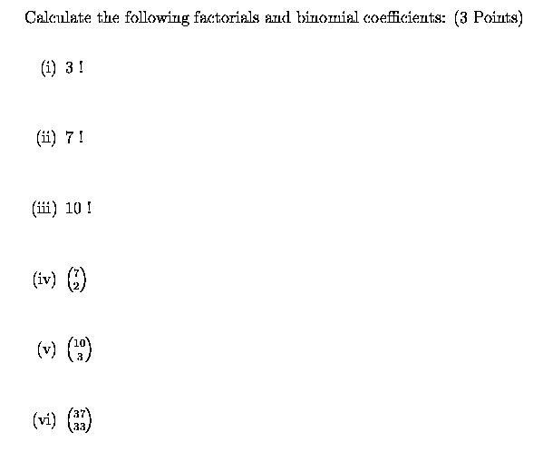

Stat 2000, Section 002, Homework Assignment 12 (Due 11/29/2001 11:59pm)
- 0) Reading: CyberStats
- Unit B-6 -- Expected Values and Variance
- Unit B-7 -- Binomial Random Variables
- 1) Please work on the following CyberStats exercises:
- Unit B-6 -- Expected Values and Variance,
Exercises 1.1 - 1.12 (1/2 Point each)
- Unit B-7 -- Binomial Random Variables,
Exercises 1.1 - 1.21 (1/2 Point each)
- 2) A life insurance company sells a term insurance policy to a
21-year old male that pays $100,000 if the insured dies within the
next 5 years. The probability that a randomly chosen male will die
each year can be found in mortality tables. The company collects
a premium of $250 each year as payment for the insurance. The amount
X that the company earns on this policy is $250 per year, less the
$100,000 that it must pay if the insured dies. Here is the distribution
of X. Fill in the missing probability in the table and calculate the
mean earnings E(X). (1.5 Points)
| Age at Death | Payout | Probability |
21 | -$99,750 | 0.00183 |
22 | -$99,500 | 0.00186 |
23 | -$99,250 | 0.00189 |
24 | -$99,000 | 0.00191 |
25 | -$98,750 | 0.00193 |
>= 26 | $1,250 | ?? |
- 3) In a previous Stat 2000 class, the following point gains and
point losses between Quiz 1 and Quiz 2 have been reported:
| # Students | Point Gain/Loss |
2 | -5 |
3 | -1 |
3 | 0 |
4 | +1 |
2 | +2 |
4 | +3 |
2 | +5 |
Let the random variable Y represent the point gain/loss.
Based on this data, draw a probability histogram, draw a spike graph,
determine the cumulative probability function F(y), and draw
a graph of F(y). Mark clearly which points are included / not
included at particular positions in the graph of F(y). (4 Points)
- 4)

Happy Thanksgiving !!!